Design Systems · UX Research · Enterprise UX
Untangling 8 Years of Documentation Debt for 100k+ Employees
Comprehensive research and redesign of enterprise design system documentation serving 100k+ employees across 50+ pharmaceutical brands.
I led research, design, and product ownership on an enterprise documentation overhaul — turning a 2018-era developer portal into a system designers and developers actually wanted to use, serving 1M+ users across 50+ pharmaceutical brands.
Project Overview
The documentation hadn't been touched since 2018. Six years of tribal knowledge, outdated guidance, and development-only copy — all sitting in a portal that designers had quietly stopped using.
I ran the research, identified the gaps, and redesigned the whole thing from the ground up.
Project Details
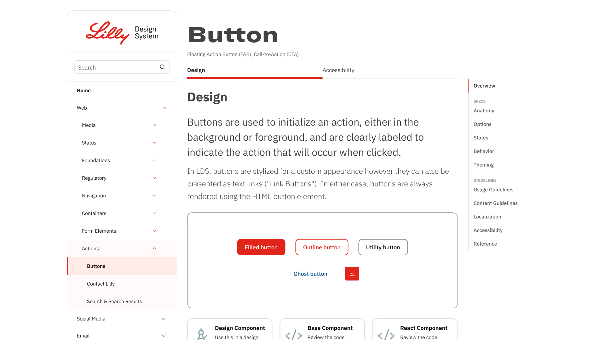
The redesigned portal — component overview with visual examples, tabbed Design/Accessibility split, and right-rail anchor navigation for deep pages
Documentation So Outdated It Had Become Folklore
The Perfect Storm: Documentation from 2018, a development-focused portal alienating designers, tribal knowledge being lost as team members left, and enterprise-scale complexity across 50+ pharmaceutical brands.
Critical Scale Challenges
- 50+ international brands requiring consistent yet flexible design guidance
- 100,000+ global employees potentially impacted by design system decisions
- Outdated tooling (Sketch) incompatible with enterprise collaboration needs
- Security constraints around cloud-based design tools in pharmaceutical industry
- Leadership bandwidth focused on team dynamics rather than system infrastructure
Research & Discovery
Survey Research
Comprehensive assessment sent to 30+ teammates across disciplines using Microsoft Forms
User Interviews
1:1 moderated interviews with designers, developers, and design system users
Card Sort Analysis
Hybrid card sort to reveal user-preferred organizational models
Industry Research
Competitive analysis of documentation patterns from leading design systems
What We Found When We Actually Looked
Missing Component States
Component interaction states weren't documented anywhere.
No Anatomical Alignment
Designers and developers used different terminology for component elements.
Structural Specifications Missing
Internal and external component structure wasn't documented.
What Good Documentation Actually Looks Like
The before/after contrast across two core documentation areas — usage guidelines and accessibility — shows the full scope of the redesign. Both sections went from dense, developer-first text to structured, visual, audience-aware documentation.
Usage Guidelines
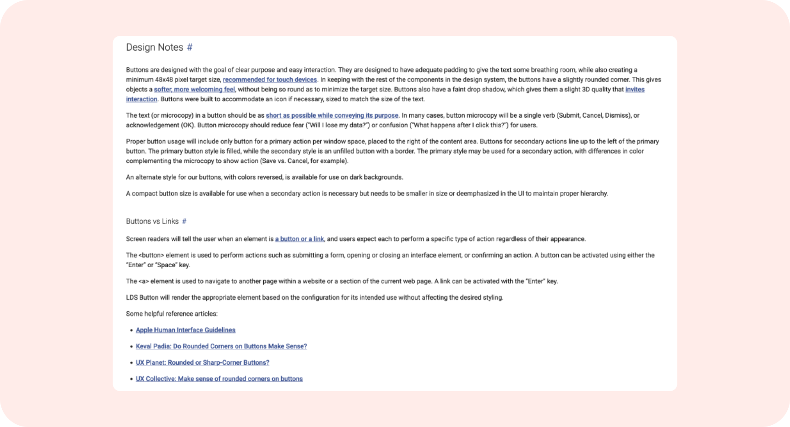
Before — dense, paragraph-heavy usage documentation. No scannability, no visual hierarchy. Designers called it "light reading."
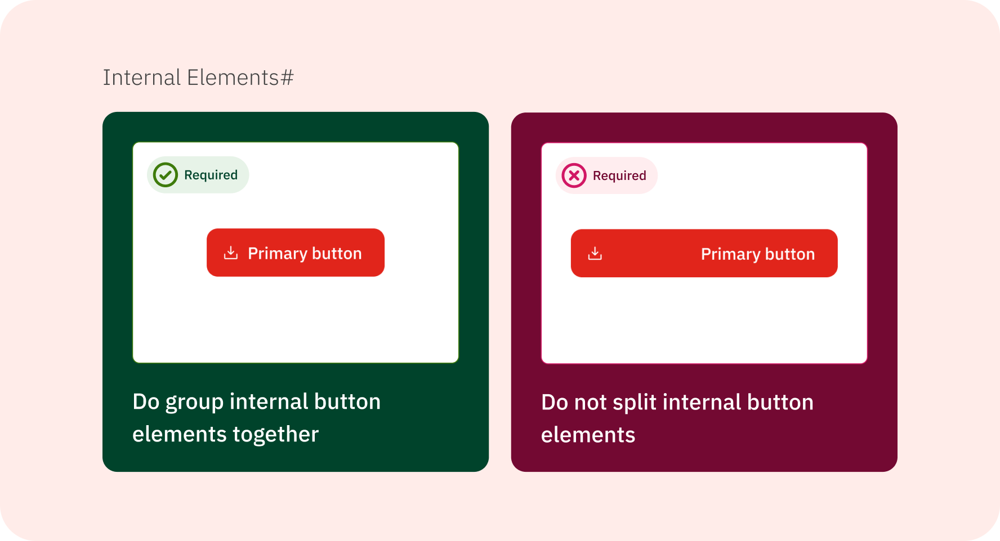
After — structured sections, scannable hierarchy, visual examples above the fold. Answers in seconds instead of paragraphs.
Navigation & Scannability
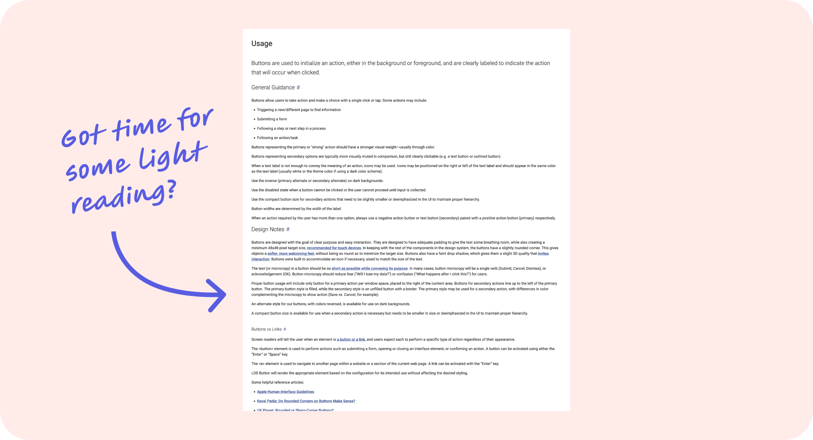
Before — no right-rail navigation. Long component pages required scrolling the entire document to find specific guidance.
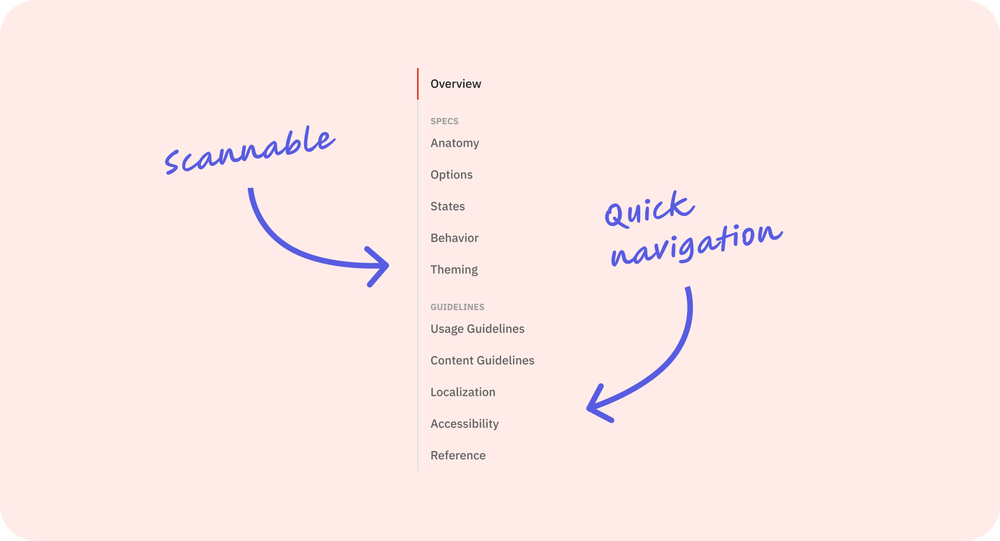
After — right-rail anchor navigation grouped into Specs and Guidelines. Jump directly to Anatomy, States, Accessibility, or any section in one click.
Content Guidelines
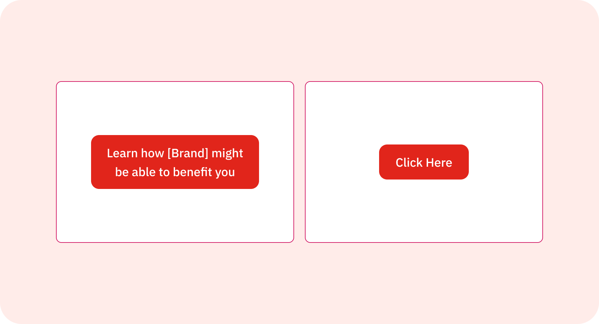
Before — vague, unmeasurable CTA copy. "Learn how [Brand] might be able to benefit you" gave teams no actionable guidance.
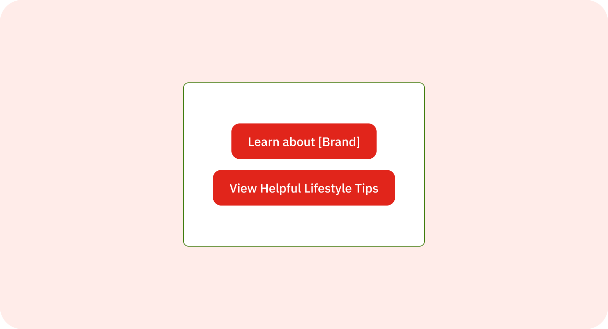
After — specific, action-oriented copy standards. Clear intent, measurable outcomes, and a shared vocabulary across 50+ brand teams.
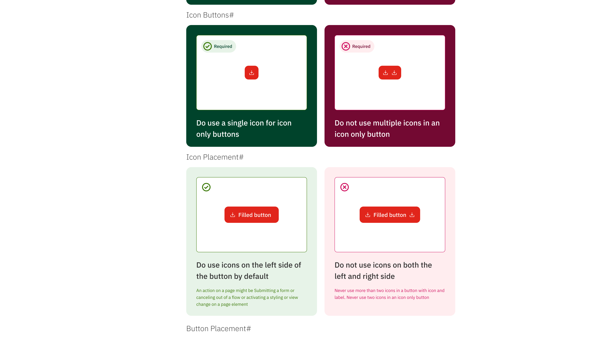
Do/don't usage cards — a pattern absent from the legacy system entirely. Visual guidance replaced text-only rules, reducing misinterpretation across 50+ brand teams.
Accessibility Documentation
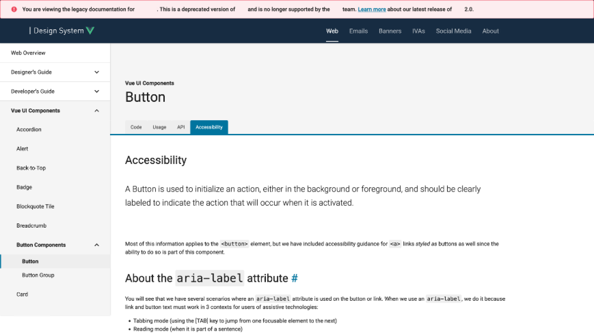
Before — accessibility was an afterthought tab with the same undifferentiated text layout as every other section.
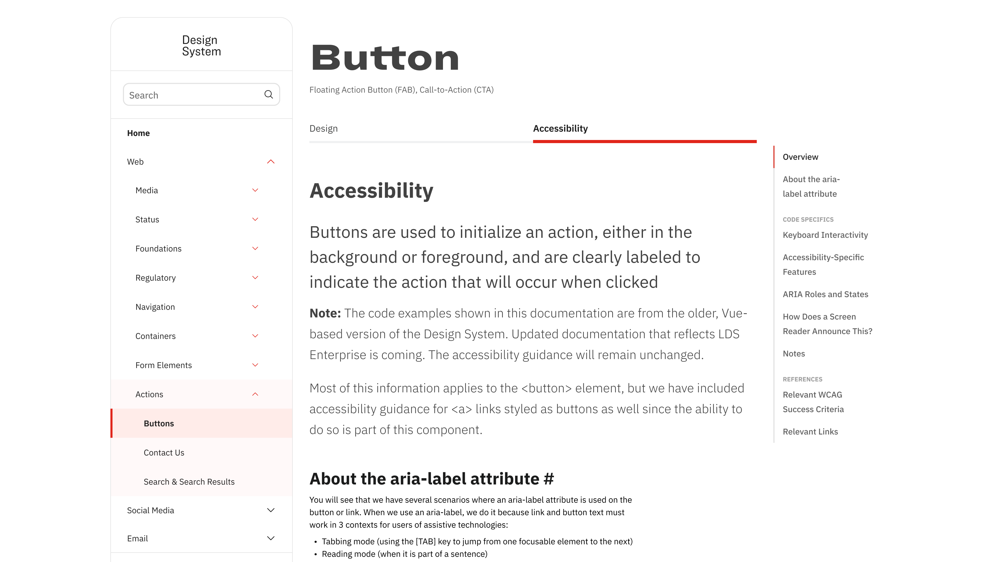
After — accessibility got full structural treatment: right-rail anchors, WCAG criteria references, and screen reader behavior documented explicitly.
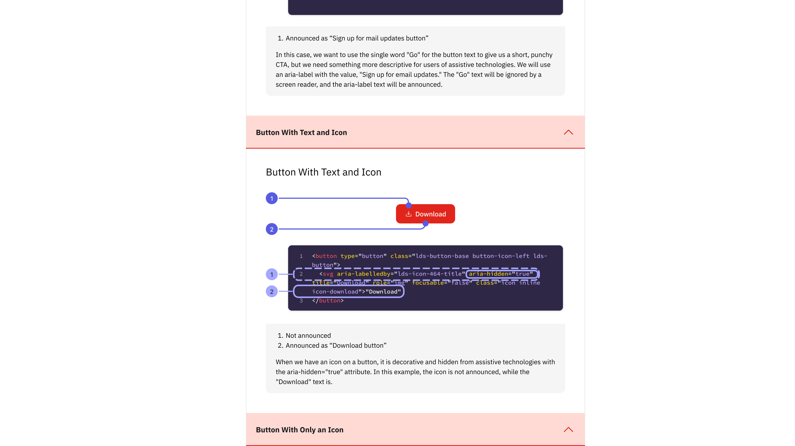
Anatomy callouts in accessibility docs — numbered indicators connect visual components to their ARIA attributes and code implementation, bridging the designer-developer gap directly in the documentation.
❌ Before: Legacy Portal
- Dense, text-heavy documentation
- Poor visual hierarchy
- Confusing navigation structure
- No component visualization
- Development-focused content only
- "Got time for some light reading?"
✅ After: Redesigned Portal
- Clean, scannable interface
- Visual component examples
- Do/don't usage cards
- All button states shown
- Structured Design + Accessibility tabs
- Right-rail anchor navigation
Results & Business Impact
Enterprise-Scale Impact
- Multi-Brand Consistency: Streamlined design implementation across 50+ international pharmaceutical brands
- Developer-Designer Alignment: Eliminated terminology confusion through shared anatomical vocabulary
- International Design Support: Comprehensive RTL and localization guidance
- Compliance Integration: Pharmaceutical industry-specific considerations built into guidelines
How This Project Kept Expanding
Research Phase
Led comprehensive user research including surveys, interviews, card sorts, and heuristic analysis to identify critical documentation gaps across 30+ team members.
Design & Product Phase
Transitioned to product owner during maternity leave coverage, managing backlog and stakeholder alignment while continuing design work — demonstrating adaptability from researcher to strategic leader.
Post-Launch & Sustainability
- User Feedback Collection: Systematic gathering and analysis of feedback to identify areas for ongoing improvement
- Content Maintenance Program: Regular documentation updates to keep pace with component evolution
- Training and Adoption Support: Structured training sessions and ongoing support for the 100,000+ employee organization
- Analytics-Driven Optimization: Built-in design system analytics enabling data-driven decisions about usage patterns